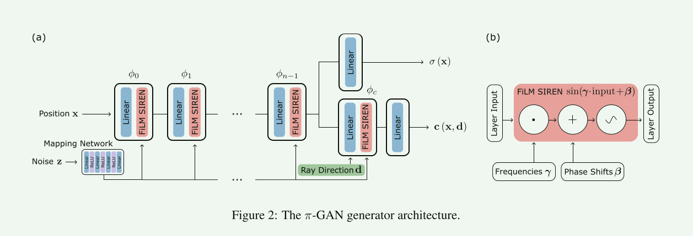
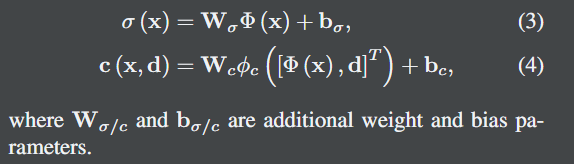
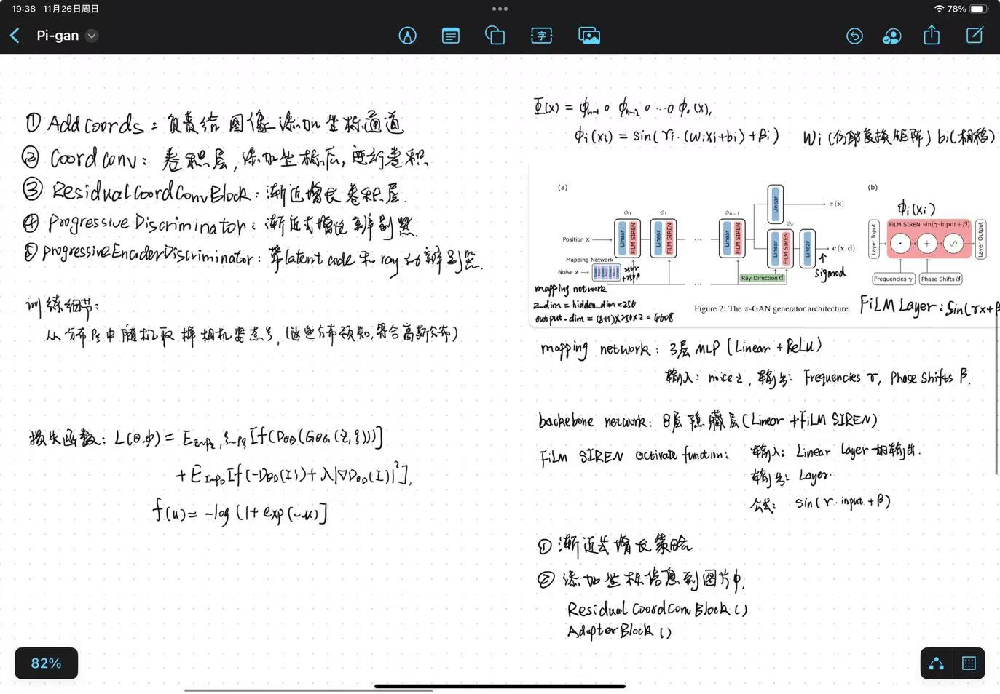
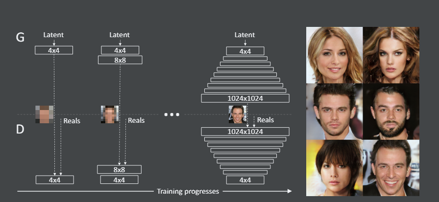
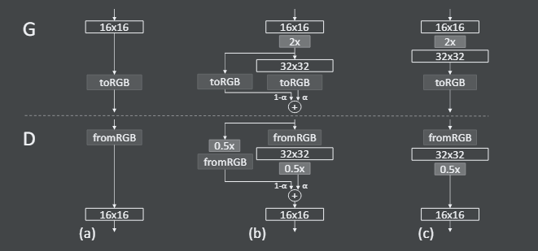
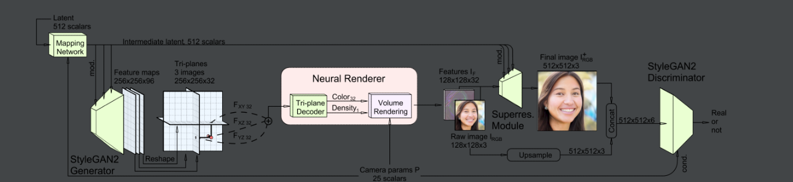
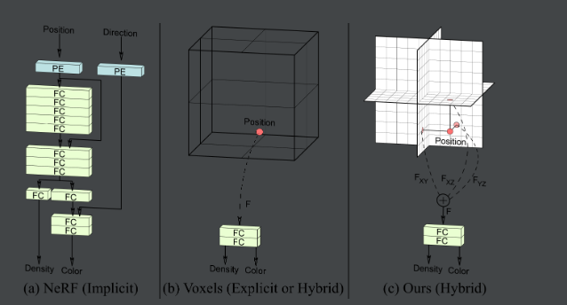
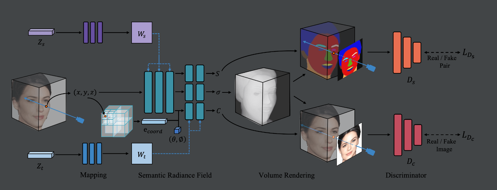
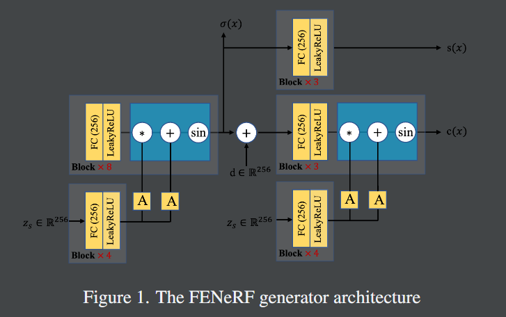
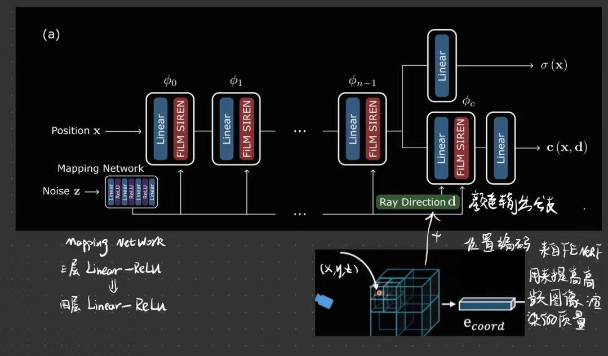

Model
pi-GAN 主要结构
1 pi-GAN 的overview

映射网络是一个简单的 ReLU MLP，它将噪声向量 z 作为输入并输出频率 γi 和相移 βi，它调节 SIREN 的每一层。

2 pi-GAN代码主要函数

3 渐进式增长辨别器overview


pi-GAN 主要的网络
1 siren:
- FiLMed-SIREN network (8个隐藏层) backbone
(network): ModuleList(
(0): FiLMLayer(
(layer): Linear(in_features=3, out_features=256, bias=True))
(1): FiLMLayer(
(layer): Linear(in_features=256, out_features=256, bias=True))
(2): FiLMLayer(
(layer): Linear(in_features=256, out_features=256, bias=True))
(3): FiLMLayer(
(layer): Linear(in_features=256, out_features=256, bias=True))
(4): FiLMLayer(
(layer): Linear(in_features=256, out_features=256, bias=True))
(5): FiLMLayer(
(layer): Linear(in_features=256, out_features=256, bias=True))
(6): FiLMLayer(
(layer): Linear(in_features=256, out_features=256, bias=True))
(7): FiLMLayer(
(layer): Linear(in_features=256, out_features=256, bias=True))
)
- 密度 颜色 输出层
(final_layer): 密度输出层
Linear(in_features=256, out_features=1, bias=True)
(color_layer_sine): 颜色转换 + ray direction d
FiLMLayer(
(layer): Linear(in_features=259, out_features=256, bias=True)
)
(color_layer_linear): 颜色输出层
Sequential(
(0): Linear(in_features=256, out_features=3, bias=True)
(1): Sigmoid()
)
- Mapping network
(mapping_network):
CustomMappingNetwork(
(network):
Sequential(
(0): Linear(in_features=256, out_features=256, bias=True)
(1): LeakyReLU(negative_slope=0.2, inplace=True)
(2): Linear(in_features=256, out_features=256, bias=True)
(3): LeakyReLU(negative_slope=0.2, inplace=True)
(4): Linear(in_features=256, out_features=256, bias=True)
(5): LeakyReLU(negative_slope=0.2, inplace=True)
(6): Linear(in_features=256, out_features=4608, bias=True)
))
2 Novel View Synthesis Details
- 冻结隐式表示的参数，为每层 MLP 寻找合适的 \(\gamma_i\) 和 \(\beta_i\) ，生成辐射场，渲染出与目标图像最佳匹配。
- 计算 1w 次随机噪声向量输入的 \(\gamma\) 和 \(\beta\) 的平均值，然后启动梯度惩罚去最小化 MES 图像重建 loss。
EG3D的overview


FENERF的主要结构
1 Overview

2 FENeRF generator architecture

FPN(Feature Pyramid Network)
发表于CVPR2017，用于目标检测，contribution是通过lateral connection让高层高语义信息和低层高分辨率信息特征融合。
Modify
- siren.py[68-71]，增加mapping network的隐藏层层数 3层 -> 4层
- siren.py[364-443]，增加3D特征向量到颜色输出层。

DeBug ing···
Code Architecture
1 discriminators.py
- ProgressiveDiscriminator() -> ResidualCoordConvBlock(inplanesm, planes, downsample) -> CoordConv(inplanes, planes)
ProgressiveDiscriminator：渐进式增长判别器
ResidualCoordConvBlock：渐进式增长卷积层
CoordConv：带坐标信息的卷积层计算
ResidualCoordConvBlock 网络层
1 | |
AdapterBlock 网络结构
1 | |
from_RGB()的最后一层： (final_layer): Conv2d(400, 259, kernel_size=(2, 2), stride=(1, 1))
2 siren.py
- TALLSIREN: forward -> forward_with_frequencies_phase_shifts
forward input:
position x: 输入的位置信息 [img_size * img_size * num_steps]
z: mapping network 的噪声输入 [256]
ray_directions: 光线方向